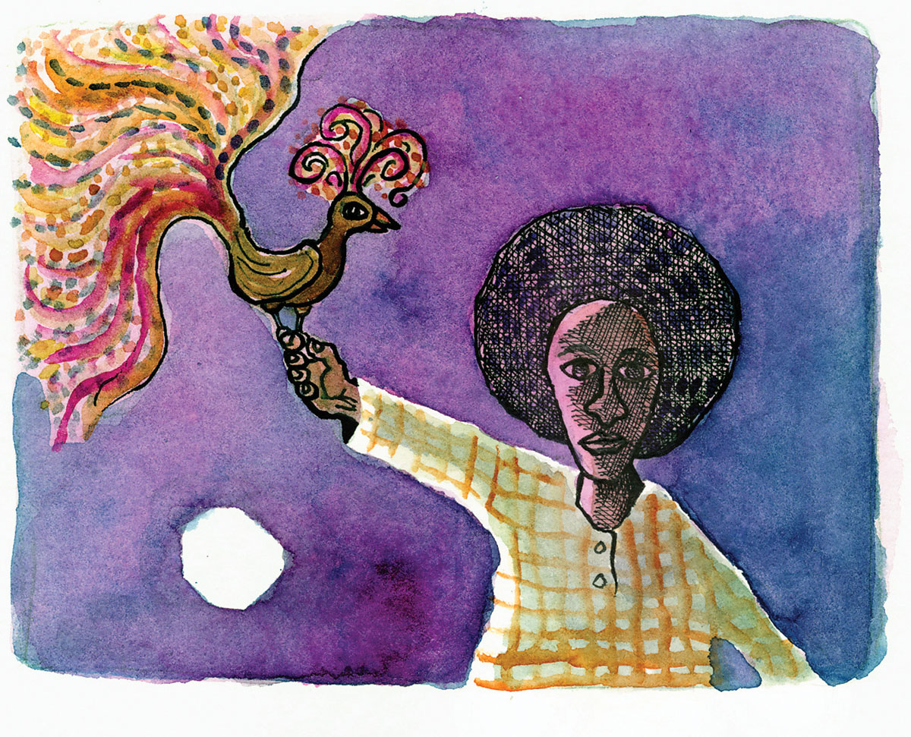
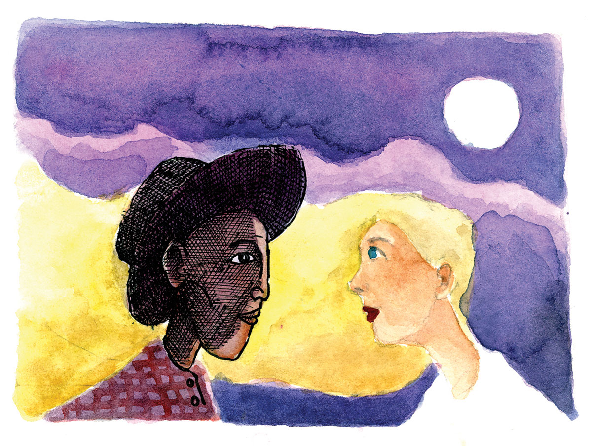

Ang Linaw sa Naukban
Sa unang panahon didto sa matahom nga mga isla sa Camotes, sa lugar sa asul ug tin-aw kaayo nga tubig na gitawag og Pilar, may nagpuyo nga batan-on nga mananagat nga ginganlag Pedro. Buotan si Pedro ug kunteto kini sa iyang kinabuhi, gawas lang sa panagsang kamingaw nga iyang bation, labi na sa mga takna nga makita niya ang mga bituon sa kalangitan nga daw malipayon kaayong nagduwa-duwa.
Mosantop dayon sa iyang hunahuna ang mga adlaw sa dihang buhi pa ang iyang mga ginikanan ug kauban pa niya ang iyang mga igsuon nga kanunay niyang kuyog sa pagpanginhas. Kinabuhi na ni Pedro ang dagat ug naandan na niya nga magpakaadlawon sa lawod para sayo niyang mabaligya ang iyang mga kuhang isda.
Usa ka gabii niana, sayo nga mipauli si Pedro gikan sa pagpanagat tungod kay misubang na ang buwan. Sa dihang modunggo na ang iyang gisakyang baruto sa baybayon, kalit lang misugat sa iyang panan-aw ang usa ka babaye. Naghilak kini ug daw may gipangita. Sa pagduol ni Pedro nakita niya ang katahom sa babaye nga nagtiniil lamang. Mao ra kinig Amerikana kay puti kaayo ang pamanit nga ingon sa mogilak kon maigo sa hayag sa buwan.
Naluoy si Pedro sa babaye ug iya kining gipangutana. Nagbakho nga mitubag ang babaye nga nawala sa maong lugar ang iyang paboritong langgam nga hinatag sa iyang amahan. Nahinumdom dayon si Pedro sa langgam nga may talagsaong kolor na iyang giluwas gikan sa mga batang nitirador niini. Iyang gikuha ang langgam sa iyang payag ug tuod man mao gayud kini ang gipangita sa dalaga. Malipayon kaayo kining nagpasalamat kaniya ug kalit lang nga nawala.
Sukad niadto, kada gabii na sayo nang mopauli si Pedro gikan sa pagpanagat labi na kung hayag ang buwan. Mopakita kaniya ang dalaga nga nailhan na niya sa ngalan nga Maria Isabel. Sa ilang mga panag-estoryahanay mibutyag kaniya ang dalaga nga usa kini ka prinsesa sa mga engkanto didto sa isla sa Leyte.
Milabay ang mga buwan ug misalingsing ang ilang mga pagbati sa usag-usa. Ug usa ka gabii niana, ilawom sa takdol nga buwan mipadayag sila sa ilang tagsatagsa ka gugma ug nakahukom nga magminyo.
Niuli dayon si Maria Isabel sa gingharian sa mga engkanto og mihangyo sa iyang amahang-hari nga magpakasal sa usa ka mortal nga tawo. Tungod sa gugma sa hari sa iyang anak ug kay nakita niya ang kaligdong sa kasingkasing ni Pedro, miuyon kini. Apan sa wa pa makalakaw ang dalaga, nabalakang mipasidaan kaniya ang amahan, “Anak, ayaw gayod kalimot nga sa dili pa mosidlak ang adlaw human sa inyong kasal kinahanglang makabalik na kamo sa atong yuta.”
Nisaad si Maria Isabel nga di kalimtan ang pasidaan sa amahang-hari ug malipayon kining mibalik sa Pilar.
Gikasal dayon si Pedro ug Maria Isabel ug dakong hikay ang nahitabo. Nalipay ang mga higala ni Pedro kay nakita nila nga gawas na matahom si Maria Isabel, buotan usab kini.
Pagkadaghan sa lamian nga mga pagkaon nga kalit lang motumaw sa mga lamesa. Nagkalain-laing mga putahe nga wa pa matilawi sa mga bisita ang kahibulongan kaayong motungha sa mga plato. Naglipay ang tanan gikan sa kagabhion ug nakalimtan sa bag-ong kasal ang pahimangno sa hari sa mga engkanto.
Milabay ang mga oras. Lawom na kaayo ang kagabhion sa dihang may mituktugaok nga manok sa halayo. Nahinumdom si Maria Isabel sa pahimangno sa iyang amahang-hari. Dali niyang gipukaw si Pedro ug mipaingon dayon sila sa baybayon. Sa ilang giagian mitipak si Maria Isabel og usa ka dakong parte sa yuta gamit ang iyang engkantohanong gahom. Kining dakong buak sa yuta milutaw sa hangin paingon sa dagat ug pagtugpa niini sa tubig kalit nga nahimong dakong barko.
Sa walay pagpanamilit nisakay dayon si Pedro ug Maria Isabel sa barko. Agad sa kusog kaayo nga hangin, paspas silang mipaingon sa gingharian sa mga engkanto. Tulin kaayo ang ilang dagan kay gihunghongan man ni Maria Isabel ang mga bawod na motabang kanila. Anam-anam na mipakita ang mga silaw sa adlaw sa halayo, timailhan sa nagsingabot nga kabuntagon. Si Pedro nahadlok. Migakos si Maria Isabel sa iyang bana ug miingon, “Pedro, ayaw kahadlok kay hapit na kita moabot.”
Diha na sila sa baba sa baybayon sa dihang misubang ang hayag kaayo nga adlaw! Mihunong ang dagan sa barko ug nibalik kini sa pagkahimong yuta. Si Maria Isabel ug si Pedro kalit nga nahanaw. Sukad niadto wa na sila igdungog pa.
Daghan ang sulti-sulti sa mga katigulangan nga ang magtiayon nahimong bato kay naabtan sila sa pagsubang sa adlaw apan duna say moingon na nakaabot gayud sila si Maria Isabel ug Pedro sa yuta sa mga engkanto ug nagmalipayon. Apan wala gayu’y nakaseguro.
Karon kon ikaw makabisita sa Leyte, didto sa lungsod sa Merida imong makita ang usa ka dakong bungtod nga daw nahisalaag kay nahimutang kini sa baybayon. Gitawag kini og Puerto Bello sa mga Katsila ug daw usa ka barko na padulong modunggo.
Ug kon ikaw usab makaduaw sa Pilar didto sa Camotes, imong makita sa Barangay San Isidro ang usa ka dakong bangag sa yuta nga nahimo na karong linaw. Gitawag kini og Naukban tungod kay dinhi gitipak ni Maria Isabel ang yuta nga nahimong barko. Hangtod karon ang mga lumad kung mangisda ug maligo man didto di gayud magsaba-saba agig respetar sa mga kaliwat ni Maria Isabel, ang prinsesa sa mga engkanto na nahigugma sa usa ka mortal na tawo.